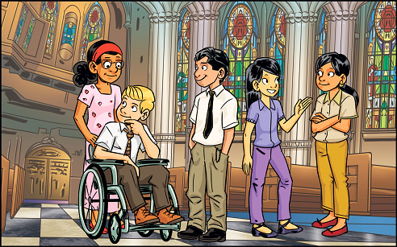

[A combination sample is comprised of different standard components combined together, or with different element(s)
and/or layout(s). This section provides some common combination samples that will occur in the RE6 teacher ePub for your preview
and is not meant to be referenced in your markup]
[This section display a preview of combination sidebar components which includes elements and layouts that will generally occured in the RE6 Teacher ePub.]
Sidebar + Unordered List:
[Below is a sidebar 01 with an unordered list.]
Code Snippet for Vendor:
Sidebar + Text + Float Right Marginalia:
[Below is a sidebar 02 with text and a float right marginalia 02.]
Code Snippet for Vendor:
[Notice there is an empty div with class "clear-both", so content doesn't flow outside the sidebar.]
Note
[This section display a preview of combination note components which includes elements and layouts
that will generally occured in the RE6 Teacher ePub.]
Note + Marginalia:
[Below is a note 01 with standard marginalia 02.]
Code Snippet for Vendor:
Informaltable Combination
[This section display a preview of combination informaltable components which includes elements and layouts
that will generally occured in the RE6 Teacher ePub.]
[Below is an informaltable 01 that needs to look like a table on any size screens with overflow-x.]
Level 1
Level 2
Level 3
Level 4
Knowledge and Understanding—Religion content acquired in Unit 1: The Gift of Our Faith and the comprehension of its meaning and significance
Demonstrates knowledge of the content presented in the unit
Knowledge of content (e.g., Scripture, creedal statements, terms, moral teachings, liturgical/ sacramental
practices)
The student included a limited number of important facts and ideas of the unit in their kit.
The student included some of the important facts and ideas of the unit in their kit.
The student included many of the important facts and ideas of the unit in their kit.
The student included all of the important facts and ideas of the unit in their kit.
Demonstrates understanding of the meaning and the significance of concepts developed in the unit
Understanding of content (e.g., dogma, doctrine, Scripture, moral principles, social teachings, concepts,
practices, procedures)
The artifacts selected indicated that the student had a limited understanding of the significance of the big
ideas of the unit.
The artifacts selected indicated that the student had some understanding of the significance of the big ideas of
the unit.
The artifacts selected indicated that the student had a good understanding of the significance of the big ideas
of the unit.
The artifacts selected indicated that the student had a thorough understanding of the significance of the big
ideas of the unit.
Thinking—The use of critical and creative thinking skills and/or processes
Plans and organizes the inquiry by asking questions, researching and gathering information from a variety of
sources, and setting goals throughout the process
Use of planning skills (e.g., focusing research, gathering information, organizing an inquiry, asking questions,
setting goals)
The student required a high level of teacher support while planning and organizing the inquiry task.
The student planned and organized the inquiry task with support.
The student planned and organized most of the inquiry task independently.
The student planned and organized the inquiry task independently.
Code Snippet for Vendor:
Level 1
Level 2
Level 3
Level 4
Knowledge and Understanding—Religion content acquired
in Unit 1: The Gift of Our Faith and the comprehension of its meaning and significance
Demonstrates knowledge of the content presented in the unit
Knowledge of content (e.g., Scripture, creedal statements, terms, moral teachings, liturgical/ sacramental
practices)
The student included a limited number of important facts and ideas of the unit in their kit.
The student included some of the important facts and ideas of the unit in their kit.
The student included many of the important facts and ideas of the unit in their kit.
The student included all of the important facts and ideas of the unit in their kit.
Demonstrates understanding of the meaning and the significance of concepts developed in the unit
Understanding of content (e.g., dogma, doctrine, Scripture, moral principles, social teachings, concepts,
practices, procedures)
The artifacts selected indicated that the student had a limited understanding of the significance of the
big
ideas of the unit.
The artifacts selected indicated that the student had some understanding of the significance of the big
ideas of
the unit.
The artifacts selected indicated that the student had a good understanding of the significance of the big
ideas
of the unit.
The artifacts selected indicated that the student had a thorough understanding of the significance of the
big
ideas of the unit.
Thinking—The use of critical and creative thinking
skills and/or processes
Plans and organizes the inquiry by asking questions, researching and gathering information from a variety of
sources, and setting goals throughout the process
Use of planning skills (e.g., focusing research, gathering information, organizing an inquiry, asking questions,
setting goals)
The student required a high level of teacher support while planning and organizing the inquiry task.
The student planned and organized the inquiry task with support.
The student planned and organized most of the inquiry task independently.
The student planned and organized the inquiry task independently.
Card Combination
[This section display a preview of combination card components which includes elements and layouts that will generally occured in the RE6 Teacher ePub.]
Card + Text + Sub Section + Title + Unordered List + Text + Accordion:
[Below is a card 01: Weekly Lesson Planner with text that looks like title 08 and a sub section that has a heading with title 08. Inside the sub section it contains an unordered list, regular text and an accordion.]
Weekly Lesson Planner
Unit Inquiry: How are we supported in our Catholic faith?
Chapter 1: What helps us grow in faith?
Learning Goals:
We are learning how our faith journey can be inspired by Scripture.
The following sections are to be taught over one week of Religious Education classes. Adjust the pacing to meet
students’ needs, ensuring prayer is a component of each day (e.g., by including a Pause to Pray feature in each
class). The Enrich and Extend activity is optional.
Activate▾
Students
...etc
Code Snippet for Vendor:
Weekly Lesson Planner
Unit Inquiry: How are we supported in our
Catholic faith?
Chapter 1: What helps us grow in faith?
Learning Goals:
We are learning how our faith journey can be inspired by Scripture.
The following sections are to be taught over one week of Religious Education classes. Adjust the pacing to meet
students’ needs, ensuring prayer is a component of each day (e.g., by including a Pause to Pray feature in each
class). The Enrich and Extend activity is optional.
Activate▾
Students
...etc
Card + Title + No Bullets Unordered List + Blockquote + Accordions
[Below is card 05: Tabs with a title, followed by a no bullets unordered list and a blockquote. Other tabs contain accordions.]
Chapter 1: What Helps Us Grow in Our Faith?
Key Learnings:
Faith is built on believing, knowing, and trusting God.
Faith is passed on through Sacred Scripture.
“Therefore I tell you, do not worry about your life, what you will eat or what you will drink, or about
your body, what you will wear. Is not life more than food, and the body more than clothing? Look at the birds
of the air; they neither
sow nor reap nor gather into barns, and yet your heavenly Father feeds them. Are you not of more value than
they?”
(Matthew 6:25—26)
Chapter 2: What Traditions Strengthen Our Faith?
Lesson 1▾
Lesson Title
...etc
Lesson 2▾
Lesson Title
...etc
Lesson 3▾
Lesson Title
...etc
Lesson 4▾
Lesson Title
...etc
Chapter 3: How Does the Holy Spirit Support Our Faith?
...etc
Code Snippet for Vendor:
Chapter 1: What Helps Us Grow in Our Faith?
Key Learnings:
Faith is built on believing, knowing, and trusting God.
Faith is passed on through Sacred Scripture.
“Therefore I tell you, do not worry about your life, what you will eat or what you will drink, or about
your body, what you will wear. Is not life more than food, and the body more than clothing? Look at the
birds
of the air; they neither
sow nor reap nor gather into barns, and yet your heavenly Father feeds them. Are you not of more value
than
they?”
(Matthew 6:25—26)
Chapter 2: What Traditions Strengthen Our Faith?
Lesson 1▾
Lesson Title
...etc
Lesson 2▾
Lesson Title
...etc
Lesson 3▾
Lesson Title
...etc
Lesson 4▾
Lesson Title
...etc
Chapter 3: How Does the Holy Spirit Support Our Faith?
...etc
Card + Text + Dialogue + Design-Icon Text Inline:
[Below is a card 03: Pause to Pray with regular paragraph text, dialogue text and design icon text inline.]
Pause to Pray
Begin with the Sign of the Cross. Use the following or a similar script to conduct the enthronement liturgy:
Teacher:
Our Bible contains the Word of God. We ask God to help us come to know Him better as we read His Word from the Bible.
(Pause and play the hymn “Gather Your People.” Invite students to join in singing if they wish. Lead them in a procession to the Prayer
Table, and have them form a circle or semicircle around it. Continue with the liturgy.)
Teacher:
I will read some prayers. As I finish each prayer, I will raise my hand and you will respond with,
“Strengthen our faith, O Lord.”
Code Snippet for Vendor:
Pause to Pray
Begin with the Sign of the Cross. Use the following or a similar script to conduct the enthronement liturgy:
Teacher:
Our Bible contains the Word of God. We ask God to help us come to know Him better as
we read His Word from the Bible.
(Pause and play the hymn “Gather Your People.” Invite students to join in singing if they wish. Lead them in a procession to the Prayer Table, and have them form a circle or semicircle around it. Continue with the liturgy.)
Teacher:
I will read some prayers. As I finish each prayer, I will raise my hand and you will
respond with, “Strengthen our faith, O Lord.”
Card + Text + Float Right Marginalia:
[Below is a card 03: Pause to Pray with regular paragraph text and a float right marginalia 02.]
Pause to Pray
Differentiated Instruction
Be aware of any negative information that may have been publicized about anyone students might research, and adjust the
suggestions accordingly.
Therefore I tell you, do not worry about your life, what you will eat or what you will drink, or about your body, what
you will wear. Is not life more than food, and the body more than clothing? Look at the birds of the air; they neither
sow nor reap nor gather into barns, and yet your heavenly Father feeds them. Are you not of more value than they?
Code Snippet for Vendor:
[Notice there is an empty div with class "clear-both", so content doesn't flow outside the card.]
Pause to Pray
Differentiated Instruction
Be aware of any negative information that may have been publicized about anyone students might research, and adjust
the suggestions accordingly.
Therefore I tell you, do not worry about your life, what you will eat or what you will drink, or about your body,
what you will wear. Is not life more than food, and the body more than clothing? Look at the birds of the air; they neither
sow nor reap nor gather into barns, and yet your heavenly Father feeds them. Are you not of more value than they?
Marginalia Combination
[This section display a preview of combination marginalia components which includes elements and layouts that will generally occured in the RE6 Teacher ePub.]
[Below is two marginalia 03 stacking on top of each other and a marginalia 02. Inside the marginalia 02 is some regular text and a design-icon. Note that the design-icon is outside the marginalia thus it is not aligned with the text inside the marginalia.]
Enrich and Extend
Explain to students that sometimes we need to have faith in the people around us. Have students research a modern-day
hero such as Terry Fox, Rick Hansen, Jean Vanier, Susan Aglukark, Craig Kielburger, or Viola Desmond. Have students use
pre-approved online and print resources to uncover aspects of the person’s life. Have students identify the actions
taken by this person that demonstrate faith: to believe, to know, and to trust. Encourage students to identify how the
person used a challenge to do some good in the world. What message does this person’s faith have for people who are
suffering through some immense challenges? What do the actions of these people teach about the importance of the
building blocks of faith: believe, know, trust? Have students prepare a brief profile of their chosen person in a format
of their choice: poster, news article, poem, photo essay, etc. Display students’ completed profiles in the classroom.
Code Snippet for Vendor:
[Notice that there is a div tag wrapper wrapping all the components. This allows the helper float-right class to ONLY apply to that div rather than every other component.]
Practice Combination
[This section display a preview of combination practice components which includes elements and layouts that will
generally occured in the RE6 Teacher ePub.]
Practice + Main Title + Design-Icon Text Inline + Practice Div of Question + Text:
[Below is practice 01 with the main title and design-icon text inline next to it. The practice div of question has an optional text within it (Orange colour) and below are regular text.]
Reflect and Connect
To have students reflect on their learning in Lesson 1, ask:
Why is it important for me to believe in God, to know God, and to trust Him?
Have students explain how each of these ways brings them closer to God in faith. Direct students to record their
responses in their journals, providing support for their answers using ideas from the Student Book.
Code Snippet for Vendor:
Reflect and Connect
To have students reflect on their learning in Lesson 1, ask:
Why is it important for me to believe in God, to know God, and to trust Him?
Have students explain how each of these ways brings them closer to God in faith. Direct students to record their
responses in their journals, providing support for their answers using ideas from the Student Book.
Practice + Main Title + Ordered List:
[Below is practice 01 with main title, text followed by an ordered list.]
Know, Think, Infer (page 6)
Read the questions together. Have students discuss each question with a partner before answering the questions
in their journals.
What does having faith mean? (Having faith means believing that God exists, knowing that He loves us
unconditionally and wants us to be happy, and trusting that He has a plan for us to be happy.)
Why can we completely trust God, and how do we build that trust? (God created us; He loves and cares for
us; He has given us the gift of faith, and with that faith we can trust He will always be there to guide us.
We build trust by developing and
strengthening the relationship through time spent with Him. Through our experiences, we come to know how God
will help give us the strength we need to face any situation.)
Code Snippet for Vendor:
[Notice the ol tag does not have a "practicelist" class so there is no dotted line here.]
Know, Think, Infer (page 6)
Read the questions together. Have students discuss each question with a partner before answering the questions
in their journals.
What does having faith mean? (Having faith means believing that God exists, knowing that He loves us
unconditionally and wants us to be happy, and trusting that He has a plan for us to be happy.)
Why can we completely trust God, and how do we build that trust? (God created us; He loves and cares for
us; He has given us the gift of faith, and with that faith we can trust He will always be there to guide us.
We build trust by developing and
strengthening the relationship through time spent with Him. Through our experiences, we come to know how God
will help give us the strength we need to face any situation.)
Practice + Main Title + Design-Icon Text Inline + Practice Div of Question + Text + Float Right Marginalia:
[Below is practice 01 with the main title and design-icon text inline next to it. The practice div
of question has an optional text within it (Orange colour) and below are regular text. There is also a float right marginalia 02 included as well inside the practice.]
Reflect and Connect
To have students reflect on their learning in Lesson 1, ask:
Why is it important for me to believe in God, to know God, and to trust Him?
Have students explain how each of these ways brings them closer to God in faith. Direct students to record
their
responses in their journals, providing support for their answers using ideas from the Student Book.
Code Snippet for Vendor:
Reflect and Connect
To have students reflect on their learning in Lesson 1, ask:
Why is it important for me to believe in God, to know God, and to trust Him?
Have students explain how each of these ways brings them closer to God in faith. Direct students to record their
responses in their journals, providing support for their answers using ideas from the Student Book.
Figuregroup Combinations
[Figuregroup layout that have a combination of figure captions.]
2-Column Figure Layout with Captions for Figures and Figuregroup:
[Below is a sample preview of 2-Column figure layout with captions for figures and figuregroup.]

I am figure caption for the first figure.
I am figure caption for the second figure.
I am caption for the figuregroup.
Code Snippet for Vendor:
I am figure caption for the first figure.
I am figure caption for the second figure.
I am caption for the figuregroup.
2-Column Figure Layout with Captions for Nested Figures only:
[Below is a sample preview of 2-Column figure layout with captions for nested figures only.]
I am figure caption for the first figure.
I am figure caption for the second figure.
Group of 2 images.
Code Snippet for Vendor:
I am figure caption for the first figure.
I am figure caption for the second figure.
Group of 2 images.
2-Column Figure Layout with Caption for Figuregroup only:
[Below is a sample preview of 2-Column figure layout with caption for figuregroup only.]
I am caption for the figuregroup.
Code Snippet for Vendor:
I am caption for the figuregroup.
2-Column Figure Layout without Captions for both Figures and Figuregroup:
[Below is a sample preview of 2-Column figure layout without captions for both figures and
figuregroup.]
 Invite students to join in singing if they wish. Lead them in a procession to the Prayer Table, and have them form a circle or semicircle around it. Continue with the liturgy.)
Invite students to join in singing if they wish. Lead them in a procession to the Prayer Table, and have them form a circle or semicircle around it. Continue with the liturgy.)